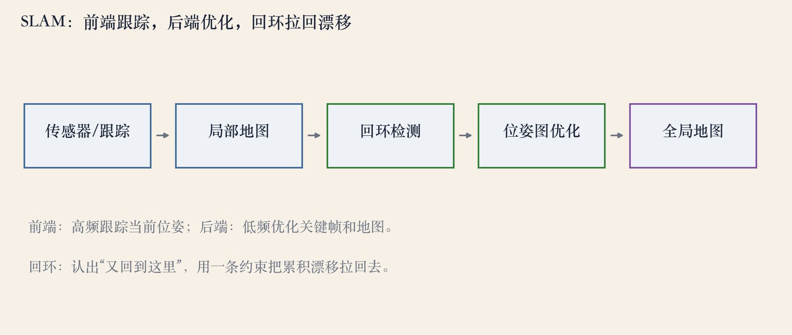
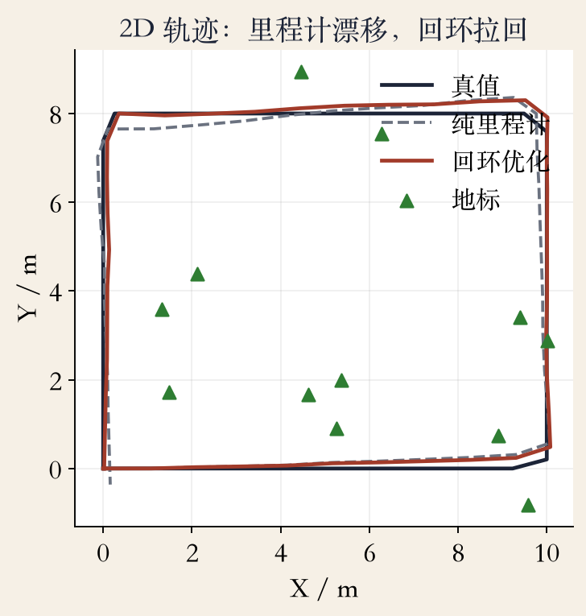
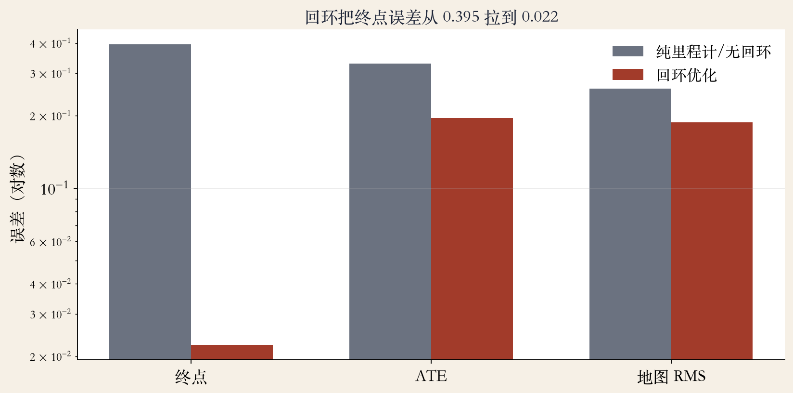

原书第 734 页 · 什么是 SLAM
SLAM：边走，边定位，边建图
- 机器人一边走，一边要知道自己在哪里。
- 还要把周围的地标画进地图。
- 定位和建图互相依赖：先有地图才能定位，先定位才能建图。
- 地图可以是稀疏点、稠密深度，也可以带语义。
依据：原书 p.734
原书第 734 页 · 里程计 vs SLAM
里程计只回答“相对上一帧走了多少”
- 视觉里程计：短距离运动估计，不建全局地图。
- 误差一帧帧累积，走一圈可能偏几十厘米。
- SLAM 多两件事：维护全局地图，认出回到老地方。
- 回环把累积漂移拉回去。
依据：原书 p.734
里程计 → SLAM
里程计：相邻帧运动
+ 全局地图
+ 回环检测
原书第 735 页 · 前端与后端
SLAM 通常拆成前端和后端
- 前端：高频跟踪当前帧、做数据关联、维护局部地图。
- 后端：低频优化关键帧和全局地图。
- PTAM 把跟踪和建图拆到两个线程，用不同频率跑。
- 前端要快要稳，后端要准。
依据：原书 p.735

SLAM 五步：跟踪→局部地图→回环检测→位姿图优化→全局地图｜程序生成，未用原书原图
原书第 734–735 页 · 回环
回环：认出“我又回到这里”
- 当前画面和很久以前某一帧很像，先做地点识别。
- 确认是同一地方后，在轨迹上加一条回环边。
- 后端把里程计边、回环边、地标观测一起优化。
- 认对了拉回漂移；认错了，整张地图会被假边拧歪。
依据：原书 pp.734–735
回环两步
地点识别：外观检索
几何验证：确认同一地点
加边：让整条轨迹分担误差
原书第 736 页 · 路线分歧
稀疏还是稠密？特征还是直接？
- 稀疏特征快、稳，适合定位。
- 稠密地图好看，适合避障和 AR 遮挡，但算力大。
- 直接法用像素灰度，弱纹理也能用，但对光照敏感。
- 后端可以用滤波、因子图或位姿图。
依据：原书 p.736
三个选择
稀疏特征 / 稠密像素
特征匹配 / 直接法
滤波 / 因子图 / 位姿图
原书第 736–737 页 · VIO
视觉 + IMU：一个管快，一个管慢
- 相机帧率低，快速运动容易糊。
- IMU 频率高、短期准，但长期漂。
- 视觉惯性里程计把两者结合，用 IMU 去低频漂移。
- VIO 还要做时间同步、外参标定和 IMU 偏置估计。
依据：原书 pp.736–737
为什么互补
相机：低频、长期稳
IMU：高频、短期准
合起来：尺度可观、漂移更小
实验 · 纯里程计
40 个位姿走一圈，终点偏 0.395 米
- 机器人沿 10×8 矩形走一圈。
- 40 个位姿、12 个地标、120 条观测。
- 里程计噪声：0.02 米、0.008 弧度。
- 不做回环，位姿图只能拟合里程计，终点拉不回起点。
依据：程序生成 2D 实验
漂移怎么来的
每一步误差不大
39 步连起来
终点就偏了
图 · 回环前后轨迹
加回环：终点误差降到 0.0223 米
- 加起点和终点的回环约束。
- 终点误差 0.395 → 0.0223 米，约 17.7 倍。
- ATE 0.330 → 0.195。
- 地标地图 RMS 0.259 → 0.188。
依据：程序生成 2D 实验

2D 轨迹：真值/纯里程计/回环优化，40 位姿 12 地标｜程序生成，未用原书原图
图 · 误差与失败边界
回环认对是收益，认错是灾难
- 回环残差 RMS 只有 0.00096。
- 回环不是把终点硬拽过去，而是加一条观测边。
- 假回环会把整张地图带歪。
- 动态物体、纯旋转、弱纹理、快速运动都会让前端失败。
依据：程序生成实验；原书 pp.734–737

回环前后：终点 0.395→0.022，ATE 0.330→0.195｜程序生成，未用原书原图
工程 · 架构四问
落地 SLAM，先回答四个问题
- 前端多快，后端多慢？
- 关键帧怎么选？太多算不动，太少约束不够。
- 回环怎么验证？单靠外观不够。
- 地图怎么存？稀疏点、稠密深度还是语义层？
依据：原书 pp.735–736；本集总结
概念比较 · SLAM / SFM / BA
不是三种算法，是三种用法
- SFM：离线、全局一致、可以慢慢优化。
- BA：它们共用的后端。
- SLAM：在线、有延迟约束、要处理回环和传感器。
- 选型先问：要实时吗？要闭环吗？地图要多密？
依据：原书 pp.734–737；本集总结
一张表
SFM：离线 + 全局
SLAM：在线 + 回环
BA：共用后端
总结 · 下一集
SLAM 的三句话
- 在线同时定位和建图：前端高频，后端低频。
- 回环拉回漂移，假回环会毁图。
- 稀疏/稠密、特征/直接、滤波/图优化，都是取舍。
- 下一集：解剖 ORB-SLAM 的三条线程。
依据：本集回顾
带走三句话
前端跟踪，后端优化
回环是双刃剑
选型看场景和算力